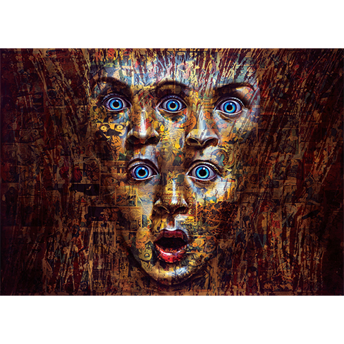

Exhibitions
The ADAM and RON Show, Elms Lesters Painting Rooms, London, United Kingdom, May 4–31, 2008.
Literature
Ron English, Death and the Eternal Forever (Korero Press, 2014), p. 116. ISBN 978-0957664920.
Ron English, Status Factory: The Art of Ron English (San Francisco: Last Gasp of San Francisco, 2014), p. 34. ISBN 978-0867197891. :contentReference[oaicite:0]{index=0}
Notes
This composition was later repurposed by the artist as a limited-edition print in the Vinyl Chord: A Revolutionary Record Store series.